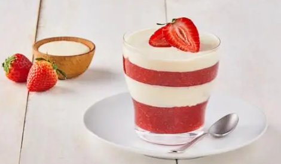

Strawberries with Cream

Descripcion
Looking for a treat for your dessert afternoon? Prepare a classic STRAWBERRIES AND CREAM DESSERT made with
NESTLÉ® Media Crema and share it with your family.
Ingredients
- 1/2 Cup of Water
- 300 grams of strawberries, disinfected and cut into quarters
- 1/2 Cup of Sugar
- 1 Can of refrigerated NESTLÉ® Media Crema
- 1/4 Cup of LA LECHERA® Condensed Milk
- 300 grams of strawberries, disinfected and cut into quarters
Preparation
- Heat the water with 300 grams of strawberries and sugar until it boils or until it thickens, stirring
constantly. Let cool and refrigerate for 15 minutes.
- Mix the NESTLÉ® Media Crema with the cup of LA LECHERA® Condensed Milk. Place a layer of strawberries with a
little jam at room temperature in the bottom of a glass, add a little of the NESTLÉ® Media
- Decorate with strawberries and offer.